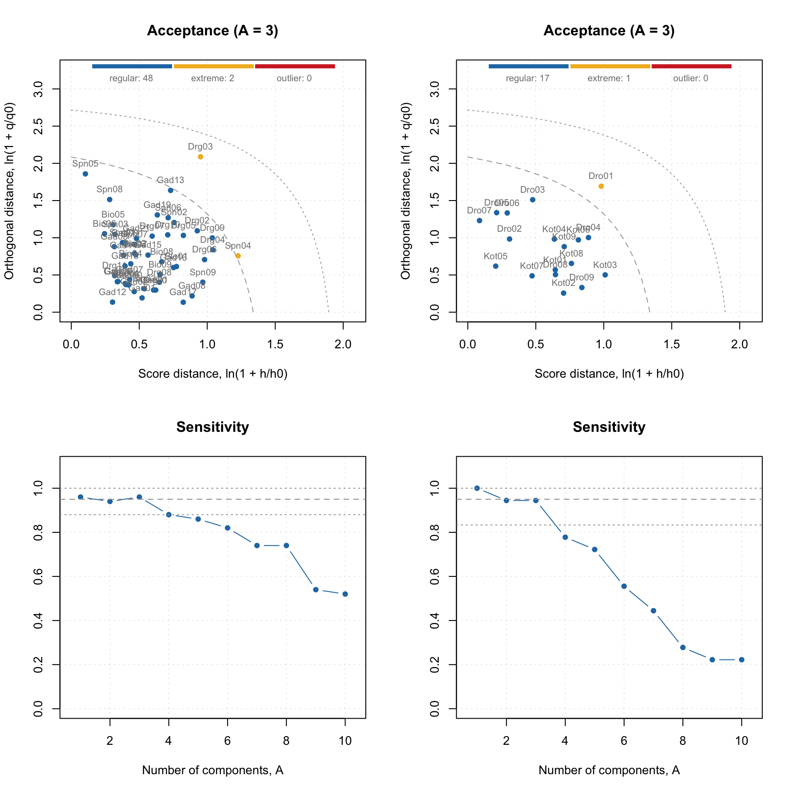
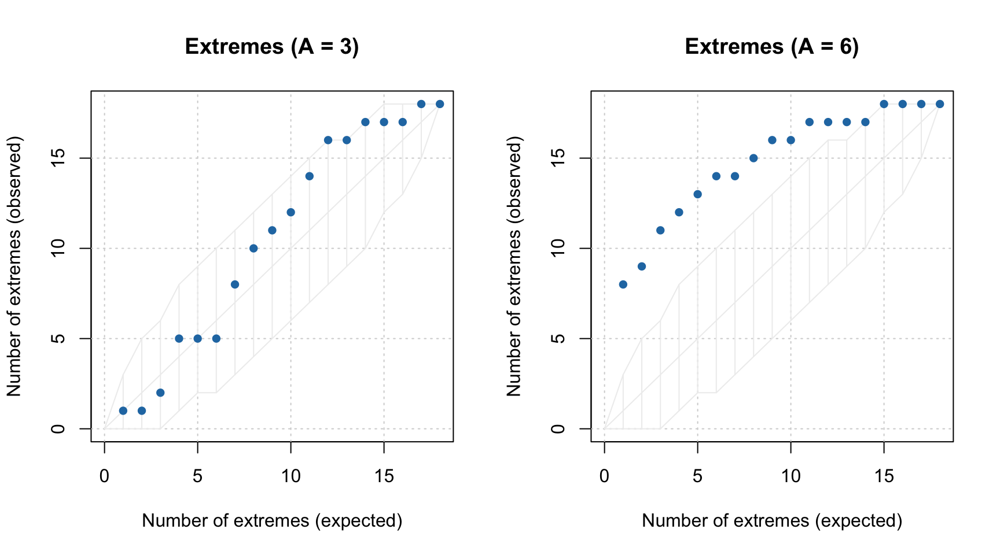
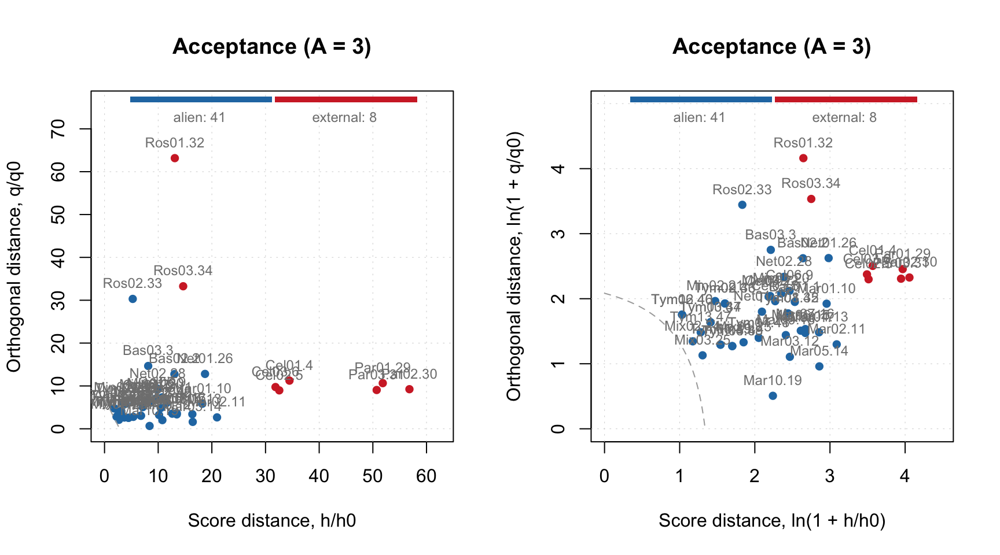
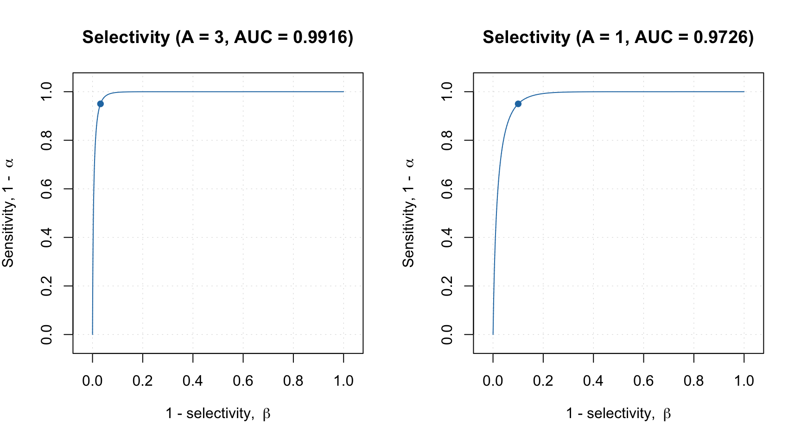
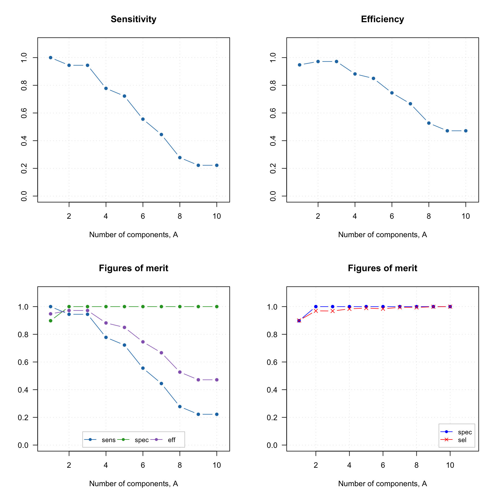
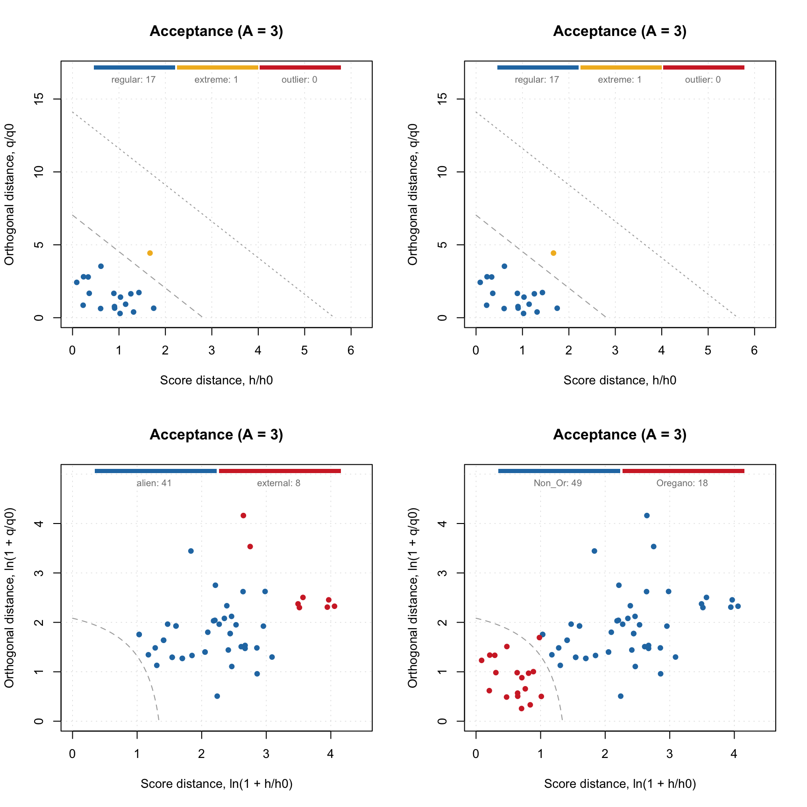
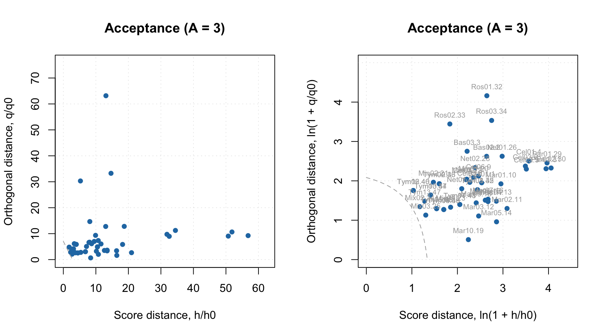

Making predictions
Dataset with target class only
Now let’s check the model performance using independent test set consisting only of the target class members. First of all, we need to load it and split to matrix with predictors and the vector with class labels:
dtt <- read.csv("./Oregano/Target_Test.csv", row.names = 1, check.names = FALSE)
ctt = dtt[, 1]
xtt = as.matrix(dtt[, -1])And apply the model:
##
## DD-SIMCA results
##
## Target class: Oregano
## Number of components: 10
## Number of selected components: 3
## Type of limits: classic
## Alpha: 0.050
##
## Number of objects: 18
## - target class members: 18
## - from non-target classes: 0
## - from unknown classes: 0
##
## Expvar Cumexpvar In Out TP FN Sens
## Comp 1 38.1465 38.15 18 0 18 0 1.0000
## Comp 2 20.4210 58.57 17 1 17 1 0.9444
## Comp 3* 11.5118 70.08 17 1 17 1 0.9444
## Comp 4 9.9178 80.00 14 4 14 4 0.7778
## Comp 5 5.4689 85.47 13 5 13 5 0.7222
## Comp 6 4.6626 90.13 10 8 10 8 0.5556
## Comp 7 5.3661 95.49 8 10 8 10 0.4444
## Comp 8 0.8855 96.38 5 13 5 13 0.2778
## Comp 9 0.3749 96.76 4 14 4 14 0.2222
## Comp 10 1.2238 97.98 4 14 4 14 0.2222Summary text for result object shows values for all components, but the selected one is marked by * in the table. As one can see, the sensitivity is very similar to the one obtained for PV-set. Let’s compare these two results also with plots:
par(mfrow = c(2, 2))
plotAcceptance(m$res$pv, log = TRUE, show.labels = TRUE)
plotAcceptance(rtt, log = TRUE, show.labels = TRUE)
plotSensitivity(m$res$pv, show.ci = TRUE)
plotSensitivity(rtt, show.ci = TRUE)
Apparently, both PV-set and test set point to \(A = 3\) as optimal selection.
As in case of PCA, one can make Extremes plot for the DD-SIMCA results, which can be helpful in identifying overfitting:

You can get all classification details by converting the DD-SIMCA result object into a data frame:
## class role decision h/h0 q/q0 f
## Dro01 Oregano extreme out 1.6683669 4.433422 17.208679
## Dro02 Oregano regular in 0.3595882 1.673141 5.144223
## Dro03 Oregano regular in 0.6114075 3.530630 10.118297
## Dro04 Oregano regular in 1.4298180 1.726167 10.601424
## Dro05 Oregano regular in 0.2364948 2.807929 6.798333
## Dro06 Oregano regular in 0.3366462 2.794651 7.272534By default the data frame is created using current model settings. If necessary, you can change this as follows:
## class role decision h/h0 q/q0 f
## Dro01 Oregano extreme out 0.9142328 4.027964 27.824718
## Dro02 Oregano regular in 0.5176074 1.110331 8.732413
## Dro03 Oregano regular in 0.9710622 2.265733 17.478646
## Dro04 Oregano regular in 0.5654677 2.270967 15.887671
## Dro05 Oregano regular in 0.3515385 1.817433 12.310749
## Dro06 Oregano regular in 0.2007634 2.019881 12.922342This is possible because any DD-SIMCA result object contains outcomes computed for all number of components and both robust and classic estimators for the distance parameters and critical limits. However, if you want to change significance level, you need to change the model first, using method setParams(), and then re-apply the new model to the dataset.
Datasets with objects from alternative classes
Now let’s load data containing non-target class members (spectra of herbs, which are not Oregano). This dataset is organized a bit differently, the row names are located in a dedicated column, plus some of the row names are not unique, therefore we use a bit modified procedure:
dtn = read.csv("./Oregano/NonTarget_Non_Or.csv", check.names = FALSE)
# get rownames and make them unique
objnames = dtn[, 1]
objnames = paste0(objnames, ".", seq_along(objnames))
ctn = dtn[, 2]
xtn = as.matrix(dtn[, -c(1, 2)])
rownames(xtn) = objnamesAnd apply the model:
##
## DD-SIMCA results
##
## Target class: Oregano
## Number of components: 10
## Number of selected components: 3
## Type of limits: classic
## Alpha: 0.050
##
## Number of objects: 49
## - target class members: 0
## - from non-target classes: 49
## - from unknown classes: 0
##
## Expvar Cumexpvar In Out TN FP Spec Sel
## Comp 1 17.0005 17.00 5 44 44 5 0.898 0.8997
## Comp 2 35.5382 52.54 0 49 49 0 1.000 0.9692
## Comp 3* 29.5319 82.07 0 49 49 0 1.000 0.9682
## Comp 4 3.6730 85.74 0 49 49 0 1.000 0.9835
## Comp 5 2.1846 87.93 0 49 49 0 1.000 0.9894
## Comp 6 6.4556 94.38 0 49 49 0 1.000 0.9840
## Comp 7 1.3279 95.71 0 49 49 0 1.000 0.9948
## Comp 8 1.6068 97.32 0 49 49 0 1.000 0.9943
## Comp 9 0.2181 97.54 0 49 49 0 1.000 0.9988
## Comp 10 0.5038 98.04 0 49 49 0 1.000 0.9997Now you can spot the difference. First of all, because this dataset does not contain any target class members, the table does not have columns for true positives (TP), false negatives (FN) and sensitivity. In contrast, it has columns for true negatives (TN), false positives (FP), as well as selectivity and specificity.
Therefore the Acceptance plot also looks different:
par(mfrow = c(1, 2))
plotAcceptance(rtn, show.labels = TRUE)
plotAcceptance(rtn, log = TRUE, show.labels = TRUE)
In this case we know in advance that all objects are from non-target classes, so they are supposed to be extreme. But they are extreme in a different way. The ones marked with role “alien” are objects from possibly the same population, closest to the target class. The objects marked as “external” are possibly from other groups/populations which are the most distinct from the target class. The plot also does not contain the limits for outliers, as “outlier” is a role that can be assigned only to a target class member.
The specificity is computed based on all non-target class objects. While selectivity is computed only by taking the “aliens” into account. Moreover, in this case we fit aliens with non-central chi-square distribution and find the overlap between the distribution of the target class objects and the distribution of the aliens. The selectivity is related to this overlap.
This approach is also known as power of test in statistics. It gives more realistic estimate on how the model will behave for rejecting the aliens. The value complementary to selectivity is a chance of making Type II error, \(\beta\). For example for \(A = 3\) the beta is \(1 - 0.9682 = 0.0318\) or approximately 3%.
The selectivity can be visualized as ROC curve, showing changes in selectivity values depending on significance level used in the model:

The plot shows the dependence as a curve and the current model as a point on the curve. It also computes the area under the curve (AUC), which can be used as auxiliary figure of merit.
Datasets with objects from both target and alternative classes
One can also apply DD-SIMCA model to a dataset containing both target and non-target class members. In this case one can use a compliance approach for finding optimal number of components. Let’s load the data first:
dta = read.csv("./Oregano/All_Test.csv", check.names = FALSE)
objnames = dta[, 1]
cta = dta[, 2]
xta = as.matrix(dta[, -c(1, 2)])
rownames(xta) = objnamesAnd apply the model
##
## DD-SIMCA results
##
## Target class: Oregano
## Number of components: 10
## Number of selected components: 3
## Type of limits: classic
## Alpha: 0.050
##
## Number of objects: 67
## - target class members: 18
## - from non-target classes: 49
## - from unknown classes: 0
##
## Expvar Cumexpvar In Out TP FN Sens TN FP Spec Sel Acc Eff
## Comp 1 17.9265 17.93 23 44 18 0 1.0000 44 5 0.898 0.8997 0.9254 0.9476
## Comp 2 34.8762 52.80 17 50 17 1 0.9444 49 0 1.000 0.9692 0.9851 0.9718
## Comp 3* 28.7428 81.55 17 50 17 1 0.9444 49 0 1.000 0.9682 0.9851 0.9718
## Comp 4 3.9465 85.49 14 53 14 4 0.7778 49 0 1.000 0.9835 0.9403 0.8819
## Comp 5 2.3285 87.82 13 54 13 5 0.7222 49 0 1.000 0.9894 0.9254 0.8498
## Comp 6 6.3771 94.20 10 57 10 8 0.5556 49 0 1.000 0.9840 0.8806 0.7454
## Comp 7 1.5047 95.70 8 59 8 10 0.4444 49 0 1.000 0.9948 0.8507 0.6667
## Comp 8 1.5752 97.28 5 62 5 13 0.2778 49 0 1.000 0.9943 0.8060 0.5270
## Comp 9 0.2250 97.50 4 63 4 14 0.2222 49 0 1.000 0.9988 0.7910 0.4714
## Comp 10 0.5353 98.04 4 63 4 14 0.2222 49 0 1.000 0.9997 0.7910 0.4714As you can see the summary table in this case is much larger containing all outcomes and figures of merit. In addition to sensitivity, specificity and selectivity, it also has columns for efficiency (the geometric mean of the two) and accuracy.
All these figures of merit can be visualized individually or all together. Here are some examples:
par(mfrow = c(2, 2))
plotFoM(rta, fom = "sens")
plotFoM(rta, fom = "eff")
plotFoMs(rta, fom = c("sens", "spec", "eff"))
plotFoMs(rta, fom = c("spec", "sel"), legend.position = "bottomright",
pch = c(16, 4), col = c("blue", "red"))
And of course similar to other plots one can define own colors, markers, etc.When you make Acceptance plot, you need to specify, whether you want to show only members (this is a default option), only strangers or both. In the latter case the objects will be color grouped by the reference classes:
par(mfrow = c(2, 2))
plotAcceptance(rta)
plotAcceptance(rta, show = "members")
plotAcceptance(rta, show = "strangers", log = TRUE)
plotAcceptance(rta, show = "all", log = TRUE)
Datasets without reference classes
If no reference class labels are provided, the objects are considered as unknown (new) and no FoMs are computed. In this case only acceptance and distance plots are available (as well as all PCA plots of course). Let’s use the non-target class data again (I assume you have it loaded), but we will not provide the vector with reference classes this time:
##
## DD-SIMCA results
##
## Target class: Oregano
## Number of components: 10
## Number of selected components: 3
## Type of limits: classic
## Alpha: 0.050
##
## Number of objects: 49
## - target class members: 0
## - from non-target classes: 0
## - from unknown classes: 49
##
## Expvar Cumexpvar In Out
## Comp 1 17.0005 17.00 5 44
## Comp 2 35.5382 52.54 0 49
## Comp 3* 29.5319 82.07 0 49
## Comp 4 3.6730 85.74 0 49
## Comp 5 2.1846 87.93 0 49
## Comp 6 6.4556 94.38 0 49
## Comp 7 1.3279 95.71 0 49
## Comp 8 1.6068 97.32 0 49
## Comp 9 0.2181 97.54 0 49
## Comp 10 0.5038 98.04 0 49And here is how the data frame with outcomes looks like:
## decision h/h0 q/q0 f
## Bas01.1 out 11.580328 6.034440 69.97052
## Bas02.2 out 13.022050 12.767634 90.64552
## Bas03.3 out 8.137095 14.658761 70.00300
## Cel01.4 out 34.464145 11.237176 194.79508
## Cel02.5 out 32.563306 8.966258 180.74904
## Cel03.6 out 31.860073 9.742277 178.78492It does not contain column “roles” anymore, only the decision (“in” or “out”).
If you try to make a plot with figures of merit, you will get an error, as none of them can be found. But Acceptance plot still works of course:
